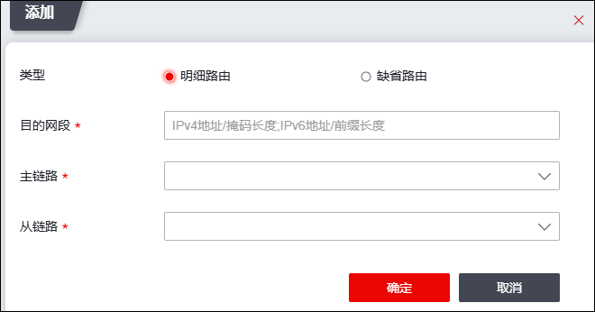

在NGFW的整个运行期间无法保证设备所有接口都能长时间运作，一些可知或不可知的问题都会造成设备接口无法正常运行。为了预防此类不稳定因素导致业务中断，天融信防火墙提供了“链路备份”功能来实时监视整个链路的工作情况。一条链路备份使用两条链路，分为主链路和从链路，当主链路发生异常时，链路备份将会自动切换到从链路，来保证网络通信的正常使用。
| 步骤1 | 选择 。 |
| 步骤2 | 添加链路备份。 |
1）点击“添加”，弹出“添加链路备份”窗口，如下图所示。

在设置链路备份时，各项参数的具体说明如下表所示。
参数 |
说明 |
|---|---|
类型 |
选择链路备份类型。可选择明细路由或缺省路由。 |
目的网络 |
链路备份类型选择“明细路由”时，需设置需进行链路备份的数据报文的目的地址或目的网络。 |
协议类型 |
链路备份类型选择“缺省路由”时，需选择对应的协议类型。 |
主链路 |
必选项，选择已经设置的链路探测ID，关于链路探测的设置具体请参见 链路探测。 |
从链路 |
必选项，选择已经设置的IP探测链路ID。 说明： 从链路和主链路不能选择同一个链路ID。关于链路探测的设置具体请参见 链路探测。 |
2）参数设置完成后，点击【确定】按钮完成链路备份的设置。
| 步骤3 | 启用链路备份功能。 |
选择一条链路备份规则，点击“”图标，启动链路备份功能。
|
²启动链路备份功能时，会判断前往目标网络的路由是否可用，如果不可用，就不启动，并且报错。关于路由的配置具体请参见 路由。 |